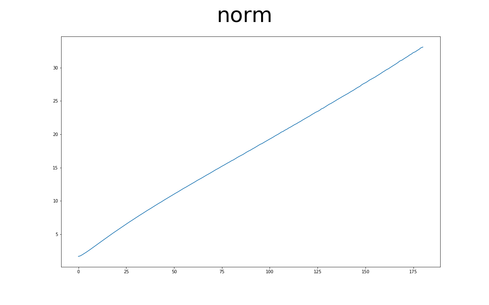

前言 Triplet Loss在FaceNet那篇論文中，主要是要讓屬於相同一個人的人臉圖片在一個Latent Space中越靠近越好，而讓不屬於這個人的人臉在這個Latent Space中遠離這個人，在這裡我使用MNIST資料集來取代人臉資料，將具有相同類別的手寫圖片彼此聚在一起，讓不同的數字之間有一定的差距。
以下的內容為個人理解，如有其他見解歡迎留言討論～
前處理和類神經網路 首先先定義出MNIST資料要如何使用，再來設計類神經網路，最後將網路和Optimizer使用到實際的訓練過程上。
資料集 & 網路架構 這邊使用Tensorflow的程式碼直接將MNIST的資料load進來，再將資料normalize到-1到1之間：
1 2 3 4 5 6 7 8 9 10 11 12 13 14 15 16 import tensorflow as tffrom tensorflow.keras.datasets.mnist import load_datafrom args import parseropts = parser() [(train_x, train_y), (test_x, test_y)] = load_data('mnist.npz' ) test_x = test_x.reshape(test_x.shape[0 ], 28 , 28 , 1 ).astype('float32' ) test_x = (test_x - 127.5 ) / 127.5 train_images = train_x.reshape(train_x.shape[0 ], 28 , 28 , 1 ).astype('float32' ) train_images = (train_images - 127.5 ) / 127.5 train_dataset = tf.data.Dataset.from_tensor_slices((train_images, train_y)) train_dataset = train_dataset.shuffle(opts.BUFFER_SIZE) train_dataset = train_dataset.batch(opts.BATCH_SIZE).take(20 )
這邊簡單的用兩層CNN加上一層全連結層，並且在最後做一個l2 normalize，將embedding的範圍限制住，通常在做Triplet的時候，都會做l2 normalize讓經過Triplet Net之後的Vector限制在一個範圍內：
1 2 3 4 5 6 7 8 9 10 11 12 13 14 15 16 17 18 19 20 21 22 import tensorflow as tffrom tensorflow.keras import Model, layersclass Triplet_Net (Model) : def __init__ (self) : super(Triplet_Net, self).__init__(self) self.emb_layer = tf.keras.models.Sequential([ layers.Conv2D(64 , (5 , 5 ), strides=(2 , 2 ), padding='same' ), layers.LeakyReLU(), layers.Dropout(0.3 ), layers.Conv2D(64 , (5 , 5 ), strides=(2 , 2 ), padding='same' ), layers.LeakyReLU(), layers.Dropout(0.3 ), layers.Flatten(), tf.keras.layers.Dense(200 )]) self.l2_norm = layers.Lambda(lambda x: tf.math.l2_normalize(x, axis=1 )) def call (self, img, training=True) : vec = self.emb_layer(img) vec = self.l2_norm(vec) return vec
Triplet Net and Optimizer 將Triplet Net和Optimizer定義出來：
1 2 3 4 5 6 7 method = 'semi_hard' triplet_net = Triplet_Net() TripletLoss = tfa.losses.TripletSemiHardLoss(margin=opts.margin) optimizer = tf.keras.optimizers.Adam(opts.lr, opts.beta)
訓練過程 接下來就是將每個Epoch中如何計算loss和如何更新網路的過程定義出來，將訓練過程中各個參數記錄下來。
Each Epoch Training 定義每個Epoch訓練過程的function，在前面加上@tf.function可以讓原本Tensorflow的Eager mode編譯成Gragh的形式，通常這意味著可以執行的更快，這也是為什麼這邊紀錄loss跟norm需要用到tf.keras.metrics.Mean()來記錄，因為這邊只使用Tensorflow的物件的話，可以讓整體的速度提升：
1 2 3 4 5 6 7 8 9 10 11 12 13 14 norm = tf.keras.metrics.Mean() loss = tf.keras.metrics.Mean() @tf.function def train_step (images, label) : with tf.GradientTape() as tape: trip_emb = triplet_net(images, training=True ) triplet_loss = TripletLoss(label, trip_emb) loss.update_state(triplet_loss) triplet_loss = tape.gradient(triplet_loss, triplet_net.trainable_variables) optimizer.apply_gradients(zip(triplet_loss, triplet_net.trainable_variables)) norm.update_state(tf.norm(triplet_net.emb_layer(images, training=False ), axis=1 ))
Whole Training Process 整體的訓練過程如下：
1 2 3 4 5 6 7 8 9 10 11 12 13 def train (train_dataset) : for epoch in range(opts.epochs): start = time.time() for image_batch, label_batch in train_dataset.as_numpy_iterator(): train_step(image_batch, label_batch) print(format_str.format(epoch+1 , norm.result().numpy(), loss.result().numpy())) norm.reset_states() loss.reset_states()
Result 這邊會展示在訓練過程中紀錄的參數和經過Triplet loss訓練後整體Embedding的變化，分為Batch Hard跟Semi-Hard。
Batch Hard 只選擇最短的AN距離和最長的AP距離，詳細可以參考前一篇。
PCA-2d 使用PCA將各個Epoch中，從Triplet Net出來的200維度的資料降到2維的平面空間上：
PCA-3d 這邊則是在3維立體空間的示意圖：
Triplet Loss 每個Epoch中記錄的Loss的變化：
Loss會降低到margin，之後就不會再下降了，這是因為選擇的triplet例子都是最難的，而最難的則至少會包含margin，除非在整個Embedding中每筆資料都符合Triplet的定義(機率極低)，而此時loss會是0。
Norm 算Embedding Vector的各項平方和再開根號，這邊取的值是在經過l2_norm之前的Vector：

整個norm會逐步上升，這是因為經過Triplet Net的Vector各維度會逐步變大，好符合Tripelt Loss。
Semi-Hard 選擇AP到AP+margin之間的AN距離，來計算loss，詳細可以參考前一篇。
PCA-2d 使用PCA將各個Epoch中，從Triplet Net出來的200維度的資料降到2維的平面空間上：
PCA-3d 這邊則是在3維立體空間的示意圖：
Triplet Loss 每個Epoch中記錄的Loss的變化：
Norm 算Embedding Vector的各項平方和再開根號，這邊取的值是在經過l2_norm之前的Vector：
可以看到norm在降低之後逐步變高，這是因為一開始選擇的例子可以透過些微的調整而讓各個資料符合tirplet的定義，而後調道不能再調的時候，只好發散整個Embedding讓norm越來越大，這也是為什麼需要在Triplet Net後面加上l2 norm的原因。
結論 透過PCA降維到2維或是3維，可以看到Semi-Hard的效果好得多，個人猜測因為Batch Hard只選擇最難的例子導致在訓練過程中所看見的資料太少，也可以說最難的資料無法代表那個Batch中的資料。
Github：NeuralNetwork-02 Triplet Loss Example at MNIST